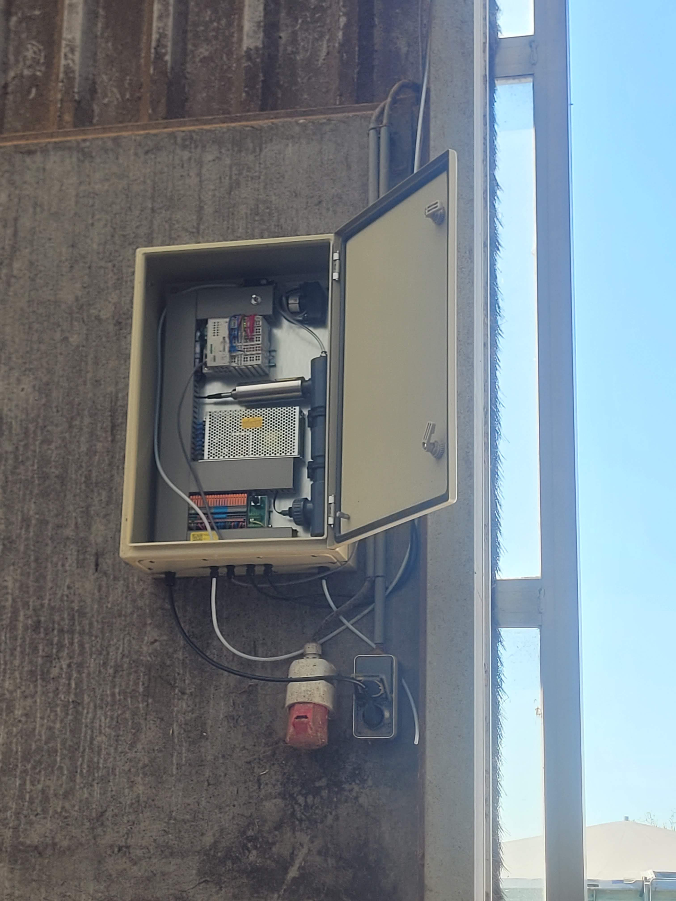
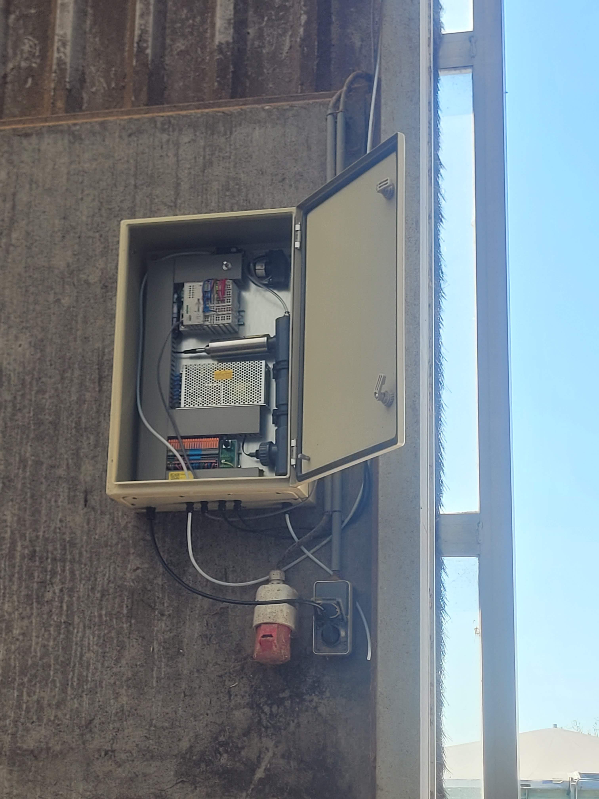

Control Panels for Air Quality Measurement
Five complete control panels for ammonia and CO2 monitoring with WAGO PLC, sensors, web visualization and custom PCB design.
July 2025
 



Project Description
This project involved the development of five complete control panels for an installation that can measure ammonia and CO2 values of the air intake. The air is pumped through a measuring tube in which the sensors are placed. The entire system is controlled by a WAGO PLC, for which I wrote the complete program.
The PLC programming in CODESYS included setting up communication between PLC and sensors, processing measurement values, and creating a control panel in the form of a web visualization. The integrated sensors consist of a flow sensor, CO2 sensor and ammonia sensor. The design process also included the development of a custom PCB for communication purposes.
I executed the entire project from A to Z: from the assembly of the measuring tube to the mechanical placement of cable ducts and DIN rails, mounting the various components, routing all wiring through the terminal strip, writing the PLC software, and testing and validating the entire system. This project demonstrates my expertise in embedded systems, PLC programming, and industrial automation.